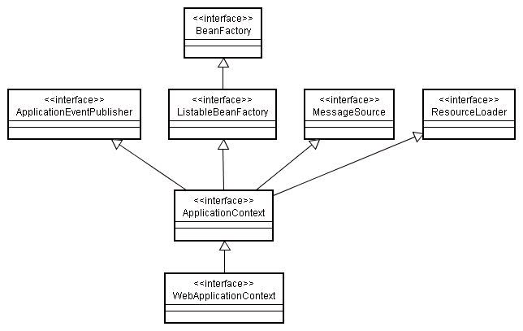

BeanFactory負責讀取Bean定義檔，管理物件的載入、生成，物件之間的關係維護，負責Bean的生命週期，對於簡單的應用程式來說，使用 BeanFactory就已經足夠，但是若要利用到Spring在框架上的一些功能以及進階的容器功能，則可以使用 ApplicationContext，BeanFactory則通常用於一些資源有限的裝置，像是行動設備。
ApplicationContext的基本功能與BeanFactory很相似，它也負責讀取Bean定義檔，維護Bean之間的關係等，然而ApplicationContext提供的一個應用程式所需的更完整的框架功能：
- ApplicationContext提供取得資源檔案更方便的方法。
- ApplicationContext提供文字訊息解析的方法，並支援國際化（Internationalization, I18N）訊息。
- ApplicationContext可以發佈事件，對事件感興趣的Bean可以接收到這些事件。
Rod Johnson建議使用ApplicationContext來取代BeanFactory，在許多實作ApplicationContext的類別中，最常使用的大概是以下三個：
- FileSystemXmlApplicationContext
可指定XML定義檔的相對路徑或絕對路徑來讀取定義檔。
- ClassPathXmlApplicationContext
從Classpath中來讀取XML定義檔。
- XmlWebApplicationContext
在Web應用程式中的檔案架構中讀取定義檔。
舉個例子來說，可以將 第一個 Spring 程式 中的測試程式修改為以下的內容：
- SpringDemo.java
package onlyfun.caterpillar;
import org.springframework.context.ApplicationContext;
import org.springframework.context.support.FileSystemXmlApplicationContext;
public class SpringDemo {
public static void main(String[] args) {
ApplicationContext context =
new FileSystemXmlApplicationContext("beans-config.xml");
HelloBean hello =
(HelloBean) context.getBean("helloBean");
System.out.println(hello.getHelloWord());
}
}為了能編譯與執行以上的程式，您必須將spring-context.jar加入至Classpath的設定中。
ApplicationContext繼承自多個介面：ApplicationEventPublisher、 HierarchicalBeanFactory、ListableBeanFactory、MessageSource、 ResourceLoader，相關的介面與使用說明，在往後的主題會一一介紹。
